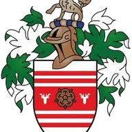

Eastbourne RFC
East Sussex club at Grange Road with strong senior and junior sections competing in Sussex leag…
View Profile →
Brighton FC (RFU), known as the Brighton Blues, is a rugby union club in Brighton, East Sussex, founded in 1868. It plays at Waterhall Playing Fields on the northern edge of the city.
The club was formed before the RFU itself, so it is one of the few clubs designated FC rather than RFC.
Brighton RFC is a rugby union club in Brighton, East Sussex, founded in 1868. It is also known as Brighton Rugby Club, Brighton Rugby Football Club or Brighton Rugby.
| Official name | Brighton RFC |
|---|---|
| Also known as | Brighton Rugby Club, Brighton Rugby Football Club, Brighton Rugby |
| Code | Rugby union |
| Based in | Brighton, East Sussex |
| Founded | 1868 |
| Ground | Waterhall Playing Fields Mill Road, Patcham Brighton BN1 8YN |
| Governing body | Rugby Football Union (England Rugby) |
| Contact | Phone, Email – see Join & Contact |
| Area guide | Rugby clubs in Sussex |
Brighton Football Club was founded in 1868, three years before the RFU existed, which is why it is "FC" rather than "RFC". Its own history traces earlier football played under modified rugby rules in Brighton from 1852. In December 1902 it became the first English club to tour France under union regulations. The club later moved from Horsdean to Waterhall, and it celebrated its 150th season in 2018-19.
Compare every club, league and training night in our guide to rugby clubs in Sussex.
In total, East Sussex has six rugby union clubs in our directory.
To ask about training, junior sections or volunteering, contact Brighton RFC directly using the details on this page.
Club official? Claim this listing to add training times.
Details checked 31 Oct 2026 from englandrugby.com.
Brighton Football Club (RFU), the Brighton Blues, is a rugby union club in Brighton, East Sussex, founded in 1868 and based at Waterhall Playing Fields, Waterhall Road. It is one of the oldest clubs in England and one of two rugby clubs on playing fields in Brighton and Hove.
Brighton Football Club was founded in 1868, making 2018-19 its 150th season. Club historian John Honeysett has argued that earlier Brighton matches played under rugby rules in 1865-66 could make it even older, though Blackheath and other clubs are normally cited as the oldest.
The 150th-season research is in John Honeysett's book The History of Brighton Football Club (Rugby Union).
Brighton RFC plays at Waterhall Playing Fields, Waterhall Road, Brighton BN1 8YR (the England Rugby listing gives BN1 8YN), on the northern edge of the city. The club holds a lease of more than 90 years on its clubhouse and hires the pitches from Brighton & Hove City Council.
| Detail | Information |
|---|---|
| Ground | Waterhall Playing Fields, Waterhall Road, Brighton |
| Clubhouse | Club room with lift access, outside bar and accessible toilets |
| Phone | 01273 562729 (England Rugby listing) |
| Neighbours | Hove RFC, whose first match as a club was against Brighton on 20 September 1952 |
| Inclusive option | Brighton & Hove Sea Serpents RFC, founded in 2015, is a gay and inclusive club in the city |
The Waterhall site is also used by walkers and dog owners, so arrive in good time on match days.
Our directory lists 15 rugby union clubs across East and West Sussex, from Brighton and Eastbourne to Chichester, Horsham and Worthing. Most also run mini and junior sections, so you can usually find a Sussex club within a short drive of home.
| Area | Clubs |
|---|---|
| Brighton and Mid Sussex | Brighton, Burgess Hill, Haywards Heath, Lewes, Uckfield |
| East Sussex coast | Eastbourne, Hastings & Bexhill, Crowborough |
| West Sussex | Chichester, Bognor, Horsham, Crawley, Midhurst, Pulborough, Worthing |
Compare all of them on our Sussex rugby clubs page.
This page was reviewed on 14 November 2026 by the UK Rugby Club Directory team. Facts come from the club's own site, its governing body or a public register where one exists, and Wikipedia for background. We write the copy ourselves and do not copy source text. League names come from England Rugby (31 October 2026).
Spotted something out of date? Use the contact page and we will check it and correct the listing.
Brighton Football Club (RFU) was founded in 1868. Because that was before the RFU was formed in 1871, it keeps the "FC" name.
The club plays at Waterhall Playing Fields, Waterhall Road, on the northern edge of Brighton.
Brighton Blues is the nickname of Brighton Football Club (RFU), the rugby union club based at Waterhall.
Yes. Hove RFC plays at Hove Recreation Ground, and Brighton & Hove Sea Serpents RFC is a gay and inclusive club. Lewes, Burgess Hill and Haywards Heath are nearby.
The club calls Brighton, East Sussex home. Use the Google Maps link on this page for directions.
Brighton RFC was founded in 1868.
Contact the club using the details on this page and ask about the next training session.
Nearby clubs in our directory include Eastbourne RFC, Lewes RFC and Crowborough RFC. Each has its own profile below.
Compare other clubs close to Brighton before you choose.